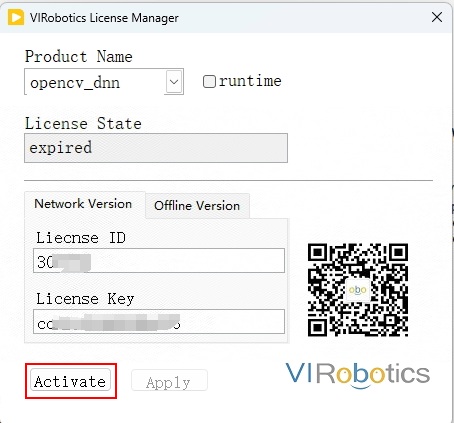
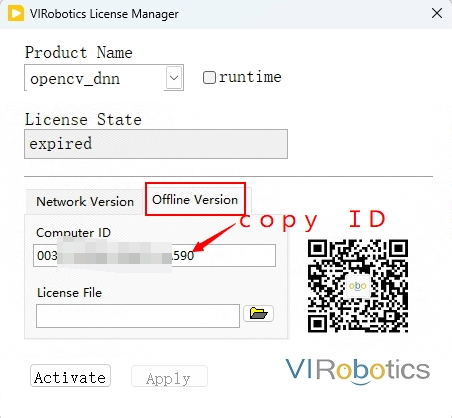
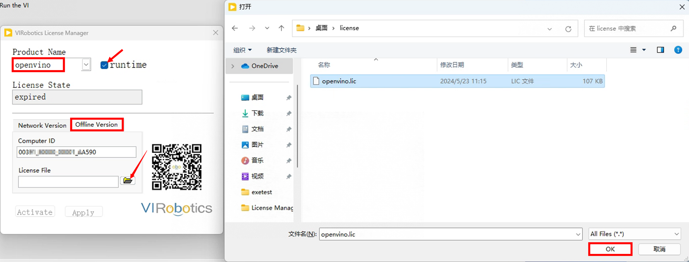

Introduction
AIVT-OV provides a 30-day evaluation period, during which the toolkit requires internet access. After the evaluation period, a development license is required. Users can check the remaining trial time or usage through the License Manager and can also activate the toolkit through the License Manager.
To open the License Manager, follow these steps:
Open LabVIEW, click Tools—VIRobotics License Manager—VIRobotics License Manager.

In the Product Name section, you can select opencv_dnn or openvino, and the license status will show the validity period. When you first download and install the toolkit, the license status for both products is set to 30 days, which is the trial period.


The toolkit offers two types of licenses:
Development License
Deployment or Runtime License
A development license is required to continue developing projects in LabVIEW that use the AI Vision Toolkit for OpenVINO. When deploying applications (executable files or installers) developed with the AI Vision Toolkit for OpenVINO to other devices, a deployment license is needed.
How to Activate the License
Activating the Development License
Currently, there are two types of development licenses: online and offline. To activate the development license, please follow the steps below:
Online Activation (Recommended)
Contact VIRobotics to obtain the activation License ID and Key;
Open LabVIEW, click Tools—VIRobotics License Manager—VIRobotics License Manager;
In the Product Name section, select opencv_dnn, enter the License ID and License Key, and click “Activate” to activate the development license. If “Activate successfully” appears, the activation is successful;

In the Product Name section, select openvino, enter the License ID and License Key, and click “Activate” to activate the development license. If “Activate successfully” appears, the activation is successful;

At this point, your AIVT-OV development toolkit is activated. If you purchased the permanent version, the License State will be “Offline Permanent Version,” and the toolkit can be used offline after activation. If you did not purchase the permanent version, the License State will display the validity period, and the toolkit requires internet access.
Offline Activation
Open LabVIEW, click Tools—VIRobotics License Manager—VIRobotics License Manager;
Click the “Offline Version” section, provide the Computer ID to VIRobotics, and the staff will send you the corresponding license file;

In the Product Name section, select opencv_dnn, click Offline Version—File button—select the corresponding .lic file—click OK, and click “Activate” to successfully activate. After activation, you can see the License State as “Offline Permanent Version”;

Similarly, in the Product Name section, select openvino, click Offline Version—File button—select the corresponding .lic file—click OK, and click “Activate” to successfully activate. After activation, you can see the License State as “Offline Permanent Version”.
At this point, your AIVT-OV development toolkit is activated. The default offline activation is the permanent offline version, and the toolkit can be used offline after activation.
Activating the Deployment License
You can package the “Open License Manager.vi” found in Help—Find Examples—Directory Structure—VIRobotics—AI Vision—License Management into an exe, such as naming the exe “Open License Manager.exe” for subsequent program deployment.
Currently, the deployment license for the toolkit is only available in one version, which is the permanent offline version. To activate the deployment license, please follow the steps below:
Online Activation (Recommended)
Contact VIRobotics to obtain the activation License ID and Key;
Run Open License Manager.exe to open the VIRobotics License Manager;
In the Product Name section, select openvino, check runtime, enter the License ID and License Key, and click “Activate” to activate (note: only openvino needs to be activated for deployment);

After successful activation, you can see the License State as “Offline Permanent Version”;
At this point, your AIVT-OV deployment license is activated. The current deployment licenses are all permanent offline licenses, so you can run your exe or installer offline after activation.
Offline Activation
Run Open License Manager.exe to open the VIRobotics License Manager;
Click the “Offline Version” section, provide the Computer ID to VIRobotics, and the staff will send you the corresponding license file;
In the Product Name section, select openvino, check runtime, click the “Offline Version” section, click the File button—select the corresponding .lic file—click OK, and click “Activate” to successfully activate. After activation, you can see the License State as “Offline Permanent Version”;

At this point, your AIVT-OV deployment license is activated. The current deployment licenses are all permanent offline licenses, so you can run your exe or installer offline after activation.
If you encounter any issues during the activation process, please contact us through the following methods:
Email: support@virobotics.net